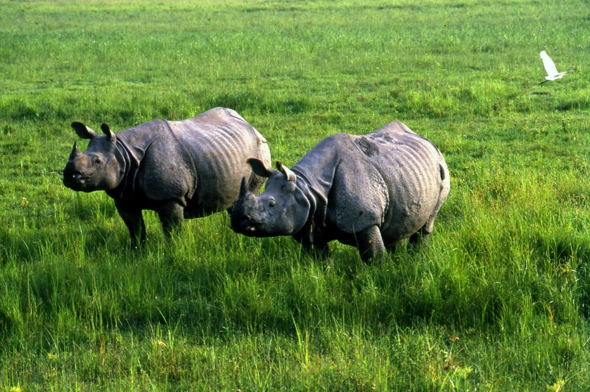

One of the greatest wildlife emblems of the country,
the UNESCO World Heritage Site of Kaziranga National
Park, is famed as a home to two-thirds of the world's
population of the rare one-horned rhinoceros. With the
mighty Brahmaputra river lapping at the fringes, the
park encompasses wetlands, forests and grasslands,
which shelter a sizeable population of tigers as well.
Moreover, the park is an abode of world-famous snakes-
the rock python, the reticulated python and the king
cobra, the longest venomous snake. While eastern swamp
deer and wild water buffalo are common sights, if you're
lucky, you can also spot a herd of elephants making their
way grandly through the park. The park is surrounded by
ancient temples, pristine waterfalls and lush tea estates.

About Tour
Day 1:
Manas National Park
Orang National Park
Orchid and Biodiversity Park
Kakochang Falls
Hoollongapar Gibbon Sanctuary